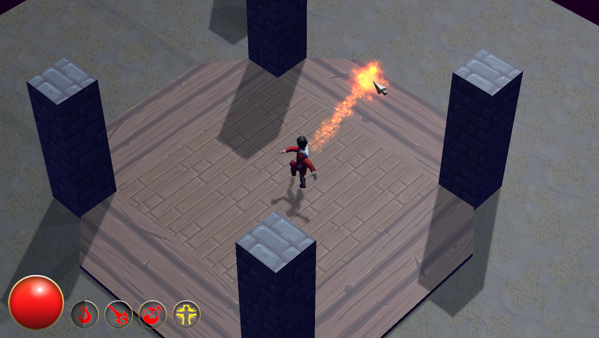
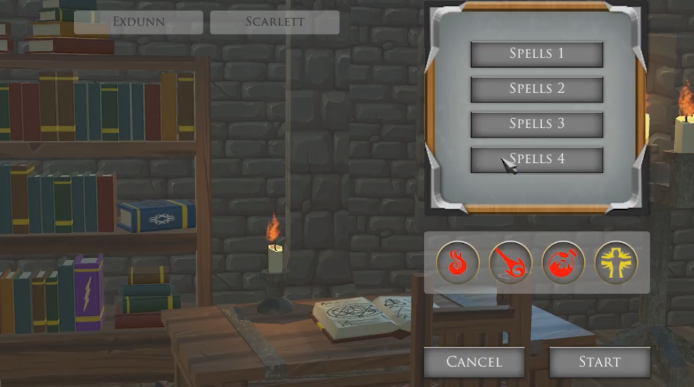
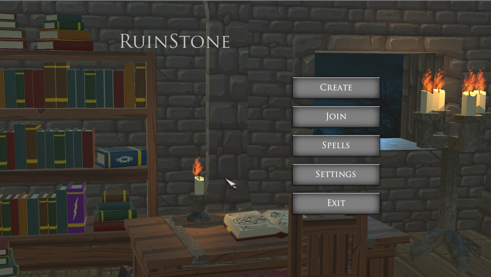
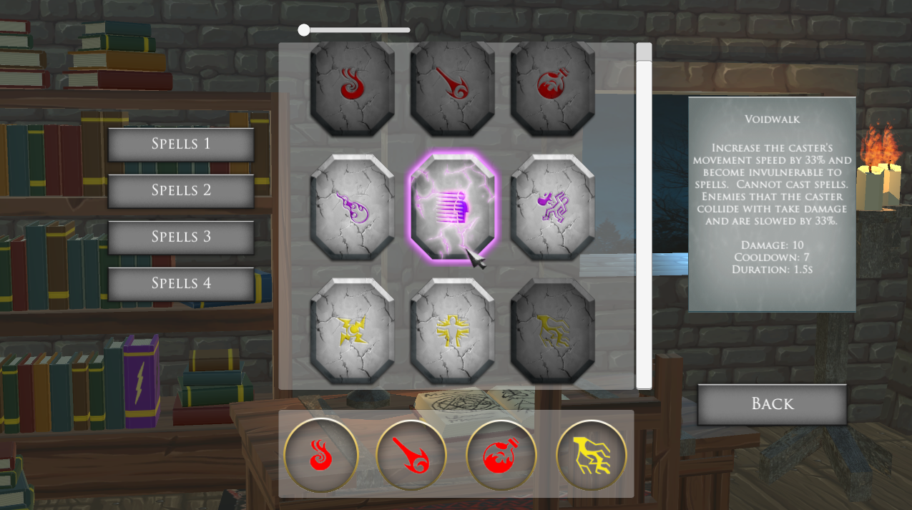

Development
Ruinstone was born when a friend of mine, Alex Dunn, asked if I wanted to work on a game together. He had an idea of a multiplayer game, based off a Warcraft 3 custom game he used to play, about wizards fighting each other with spells. We then went to work designing and creating this game. We got a few more friends and people along the way to help us out. All of the contributers and team members can be found at the bottom of the page. Ruinstone was developed in Unity3D and C#, and can be divided into these parts: players, spells, the lobby, and the UI.
The players control wizards, who each have a selection of spells at their disposal. They have in-game stats, like health and movement speed- each of which can be affected by spells in some way. The player controller and data models were worked on primarily by Alex Dunn, and the model and animations were created by Christian Sydow. The player controls his/her character in a moba-like style- right click on the ground to move there. The camera was top-down, at an isometric angle, and followed the character. The players were to move around, dodging enemy spells, and positioning themselves to cast spells themselves. To cast a spell, the player would press the wanted spell's hotkey, and left click somewhere within range. Some spells went off automatically without needing to left click.
The arena the players played on was created by Christian Sydow. It is a fairly simple map, with a slight elevation in the center, and four pillars surrounding it. The music that plays during the game was made by Cyrus Fiete.

The Quark spell.
The spells were a combination of data models and controllers, each working independently of one another. My primary job was creating the spells, the spell creation system, and the spell behaviours. Each spell consisted of a data model (i.e. its stats), and several abstract methods: cast, precast, and cooldown. With each spell came a projectile. The projectile handled the movement of the spell from the caster towards some destination. Some projectiles were simple- launch a projectile from the player in a straight line, like the fireball spell. Others were a bit more complex. The meteor spell had a projectile fall from above the cameras towards the point the player chose, which then causes a large explosion upon impact. There were also some spells that did not have any projectiles. These instead had an extra status effect, which was added to the target player and executed.In simplest words, every spell consisted of two parts: the initial cast (the what), and the delivery method (the how). The initial cast determines what is created- either a projectile or a status. The delivery will send the spell's effect to the target, and will execute that effect.
When a player decides that a spell is to be cast, the game polls the player for a location in the game. This location is used differently depending on the type of spell. For linear spells like the Fireball, the location is used to compute the direction the spell travels. For ground target spells like the Meteor, the location is the point the effect occurs. For direct target spells, the location needs to be a valid object or player. Furthermore, for most spells, the location must also be within range of the player.
The spell visuals, models, particles, and sfx were all from Magic Missiles.

The Fireball spell.
The lobby is how players are able to play with each other. We used Photon to handle the networking. When starting a game, the player either searches for an open lobby, or creates one. The player can then begin the game when he/she is satisfied with the number of players. During the game, each client's controllers sends data on the positions of the player and projectiles, any stats for the players, and any metadata through Photon to all of the other clients. This data is then used by the game's controller to tell players when they have been hit, or killed, or affected by some status.

The lobby with 2 players.
The UI was made primarily from Unity assets. The main menu's background was made by Christian Sydow, and the music by Cyrus Fiete. From the main menu, you can create a lobby, join an existing lobby, or customize your spell book.

The main menu.
In the spell book, you are shown 9 different spells. You can choose any four to use in your games. Selecting a spell also gives a small description of the spell.

Selecting spells in the spell book.
The in-game UI shows your health, in the form of a health globe on the left, and the spells you have prepared. A spell on cooldown is indicated as such.

The health globe, and the four spells.
End Result and Concluding Thoughts
The game, towards the end of development, was submitted to the IEEE GameSIG 2017 Showcase, a presentation where many different groups of people demo the game they have made. We made it as a semi-finalist.
Overall, the game ended up looking pretty decent. This was our first time working on a networked game, and trying to make all of these systems work resulted in many headaches. However, in the end we managed to get a solid working game- although we had to cut out many features we planned for initially due to time constraints.
If we ever come back to this in the future, I would love to implement more interesting spells and some of the features that were originally planned.